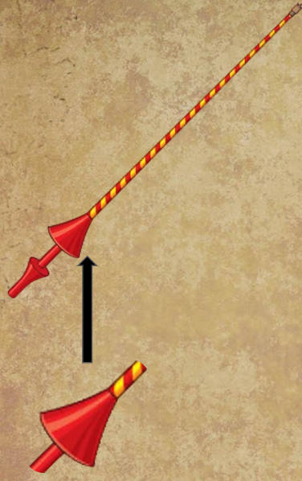
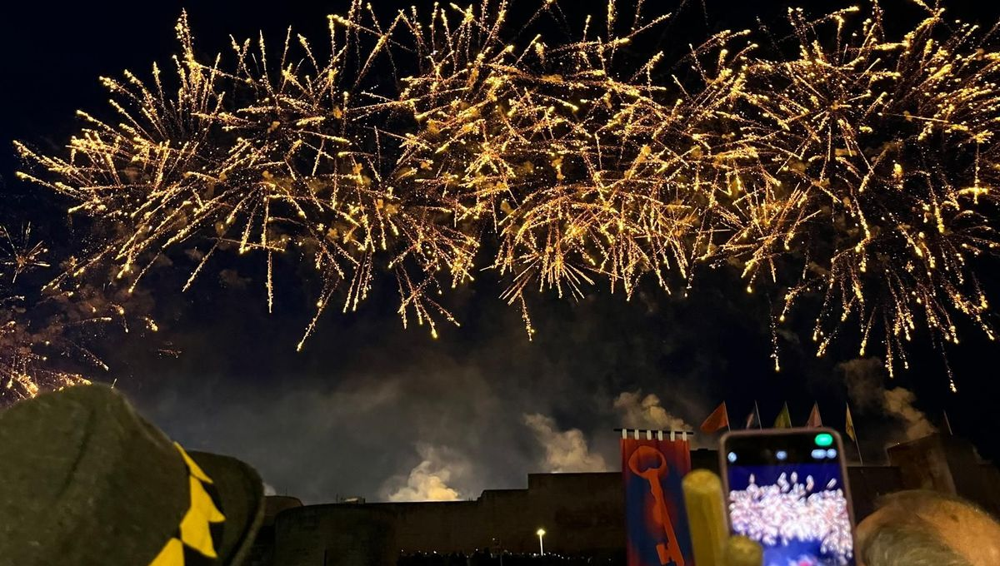
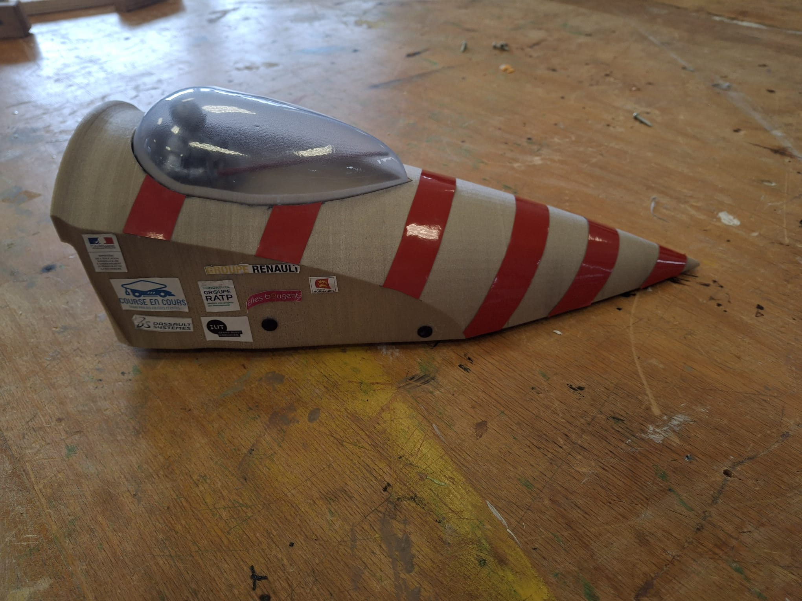
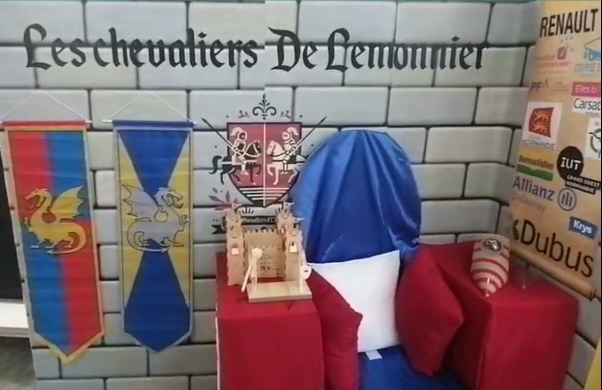
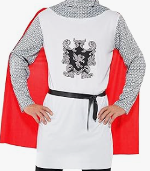
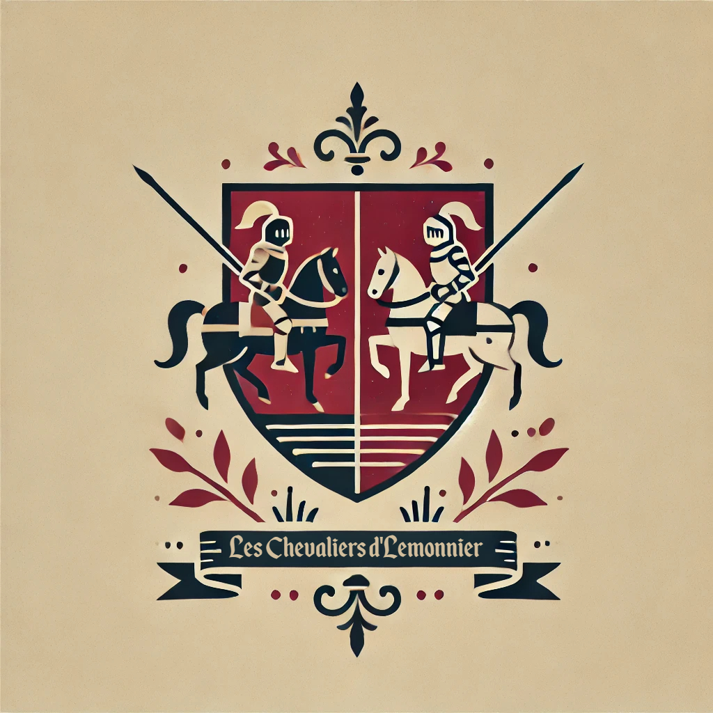
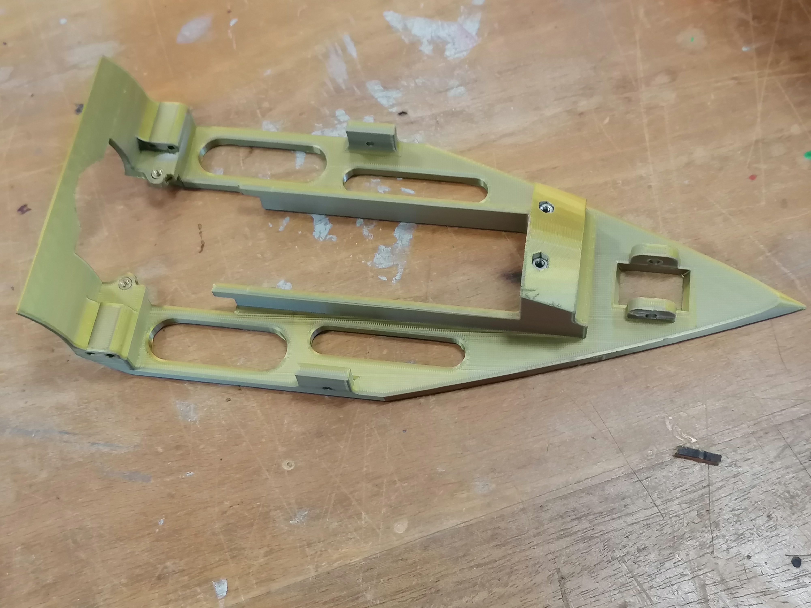
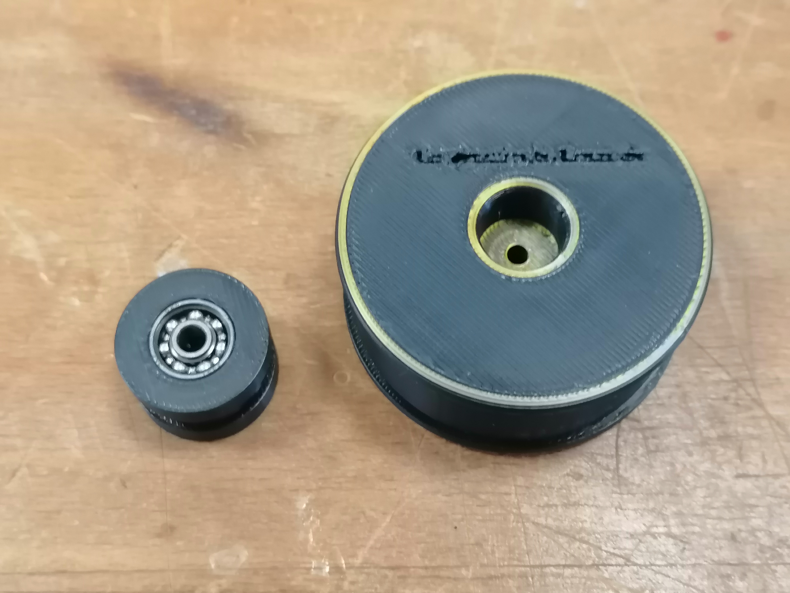
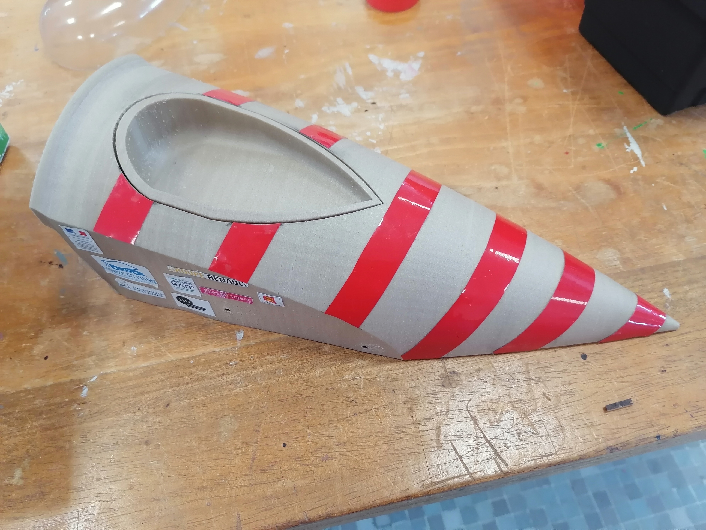
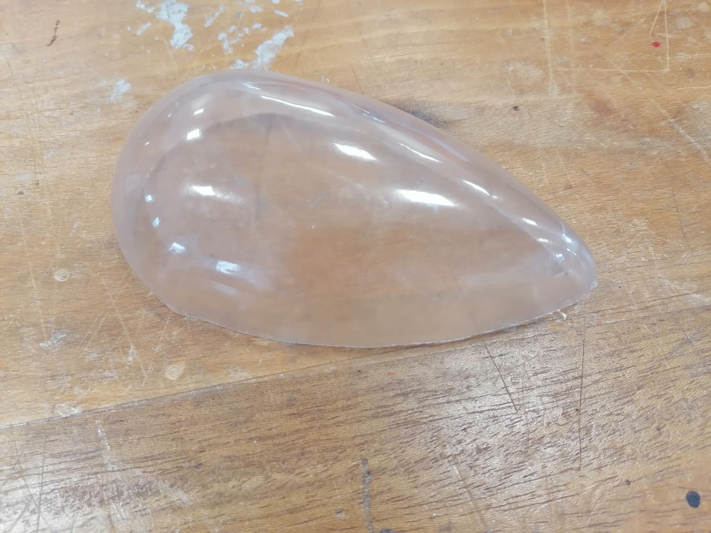

Les Chevaliers de Lemonnier
La puissance d’une lance,
la vitesse d’un chevalier.
Notre Équipe
Nous sommes les vaillants Chevaliers de Lemonnier, ainsi que leur roi, élèves du Lycée Institut Lemonnier à Caen. Notre groupe est composé de plusieurs membres ayant chacun une tâche précise de la conception de notre voiture, à sa realisation. Ensemble, nous mettons en œuvre nos compétences pour atteindre notre objectif : être les chevaliers les plus rapides du monde.
Le Thème
Nous avons choisi un thème médiéval, inspiré des tournois de joute et du millénaire de Caen dont nous parlons plus tard. Notre véhicule représente une lance de joute médiévale, symbole de force, d’adresse et d’honneur.
Millénaire de Caen
Notre inspiration vient du millénaire de Caen, célébration de l’histoire et du patrimoine de la ville. Ce lien historique renforce l’immersion dans notre univers médiéval, tout en mettant en valeur les racines culturelles locales.
Notre Véhicule
Inspirée par l’élégance et la puissance d’une lance de joute médiévale, notre création allie symbolisme et technologie. La coque principale est imprimée en PLA de lin, un matériau à la fois écologique et résistant. Les roues, réalisées en PLA noir, assurent stabilité et robustesse, tandis que le châssis doré évoque la noblesse des chevaliers. Ce design audacieux renforce l'immersion dans notre univers et reflète notre engagement technique et créatif.
Le Stand
Notre stand évoque un château, avec son mur en pierre et son trône. On peut également apercevoir nos sponsors disposés sur un parchemin à droite du trône.
Nos Tenues
Chaque membre de l’équipe porte un costume de chevalier, et l'un d'entre nous celui d'un roi. Ces tenues ont étés choisies pour rendre l'immersion dans notre mondre plus réaliste encore.

Notre Logo
Ce blason symbolise notre identité : deux chevaliers se tenants face à face avec leurs lances de joutes, prêts a combattre.
Conception
Le modèle 3D a été réalisé sur SolidWorks après un croquis préparatoire. Nous avons conçu des formes fluides et dynamiques rappelant les lignes d’une lance de joute. De plus ces formes nous ont apportés un aérodynamisme, un avantage conséquant.
Écoconception
Nous avons privilégié des matériaux écologiques comme le PLA de lin et une stratégie de réduction de pollution en s'arrangeant pour ne prendre qu'un van 9 places pour notre équipe et notre stand ce qui a diminué par deux notre emission de CO2.
Fabrication
La fabrication s’est faite au lycée à l’aide d’imprimantes 3D, de fraiseuses, ou encore de thermoformeuses. Chaque membre a participé activement à l’assemblage et à la décoration du véhicule.
   Airflow
Nous avons conçu notre véhicule pour optimiser le flux d'air, améliorant ainsi sa pénétration dans l'air et sa stabilité. Grâce à une modélisation 3D précise, nous avons pu ajuster les courbes et les ouvertures pour canaliser l’air efficacement. Cette approche favorise non seulement la performance mais ajoute aussi une esthétique dynamique à notre conception tout en gardant en tête notre identité médiévale.

Les Partenaires
Un grand merci à tous nos partenaires financiers :

Dubus Industrie
Partenaire financier principal du projet.
Carsat Normandie
Partenaire financier du projet.
Krys (Falaise)
Partenaire financier du projet.

Bureau Vallée (Taden Dinant)
Partenaire financier du projet.
Mentions Spéciales
Un grand merci à Course en Cours pour avoir organisé ce projet.
Un grand merci à l'Institut Lemonnier pour nous avoir permis d'y participer.